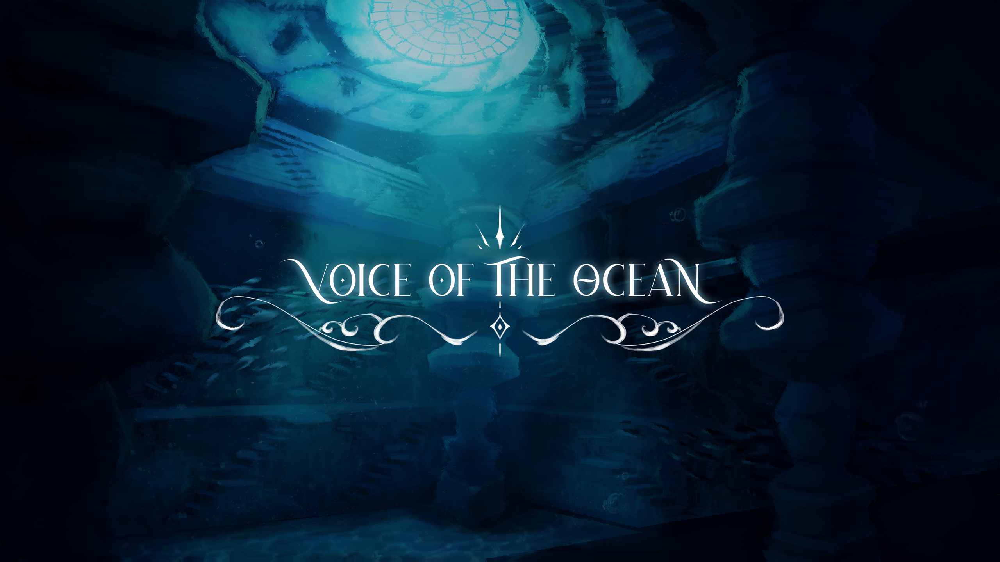
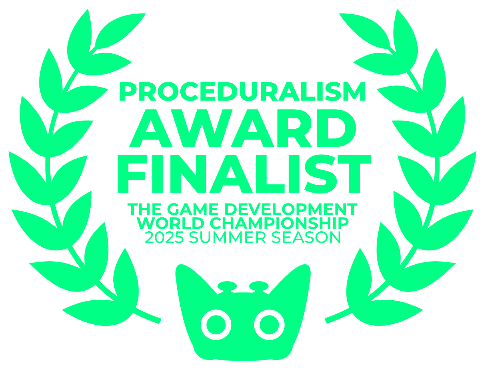

Group Project

Voice of the Ocean is a single-player action-adventure game set in a post-humanity underwater world reclaimed by nature. Players interact with the environment by singing real melodies into their microphone. By defining and performing songs, they can communicate with sea creatures and solve environmental puzzles.
The project was developed by a team of six consisting of a team lead, a sound developer, two artists, and two programmers. We also collaborated with a composer from the Conservatory of Ghent for the original soundtrack, and two marketing students from Thomas More University who handled social media. I was one of the two programmers and focused primarily on NPC AI and movement systems.
The game received external recognition during development. It was a finalist for the Proceduralism Award at the Game Development World Championship and was nominated for Best Student Game at the Belgian Game Awards.
One of the main technical challenges was creature movement. Standard Unreal movement components
move actors directly toward their target, which results in unnatural motion for fish. To solve this,
I implemented a custom USharkMovementCP component that moves creatures along a calculated
arc. This allows them to curve smoothly toward their destination and gradually decelerate as they
arrive, creating more lifelike swimming behaviour.
AI positioning presented another challenge. Unreal Engine's default EQS grid generator operates on
a flat navigation plane, while underwater creatures need to move freely in three dimensions. I
subclassed EnvQueryGenerator to generate a cubic 3D grid of candidate points around the
querying actor. These points are then evaluated using the standard EQS test pipeline to determine
the best location.

